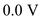

Determine the ideal value of low-level output voltage.
For an ideal logic circuit family,
Thus, the ideal value of low-level output voltage,  is
is .
.
Determine the ideal value of low-level output voltage.
For an ideal logic circuit family,
Thus, the ideal value of low-level output voltage, is.
Determine the ideal value of high-level output voltage.

Substitute  for
for  in the equation.
in the equation.
Thus, the ideal value of high-level output voltage,  is
is .
.
The gain of one points are separated by.
Substitute  for
for  in the equation.
in the equation.
…… (1)
The noise margins are within of one other.
The value of high input noise margin is,
The value of low input noise margin is,
Determine the value of voltages  when.
when.
Substitute for  and
and  for
for  in the equation.
in the equation.

Substitute for  in equation (1).
in equation (1).
Substitute  for
for  in equation (1), to calculate the value of
in equation (1), to calculate the value of .
.
Determine the value of voltages  when.
when.
Substitute  for
for  and
and  for
for  in the equation.
in the equation.
Substitute for  in equation (1).
in equation (1).
 in equation (1), to calculate the value of
in equation (1), to calculate the value of .
. 
Thus, the ranges of values for  are, andrespectively.
are, andrespectively.
Determine the minimum value of low-input noise margin.
Substitute for and  for  in the equation.
in the equation.
Determine the minimum value of high-input noise margin.
Substitute  for
for  and for in the equation.
and for in the equation.
Determine the maximum value of low-input noise margin.
Substitute for  and
and  for
for  in the equation.
in the equation.

Determine the maximum value of high-input noise margin.
Substitute  for
for  and for
and for  in the equation.
in the equation.
Thus, the ranges of values for noise margins are, andrespectively.